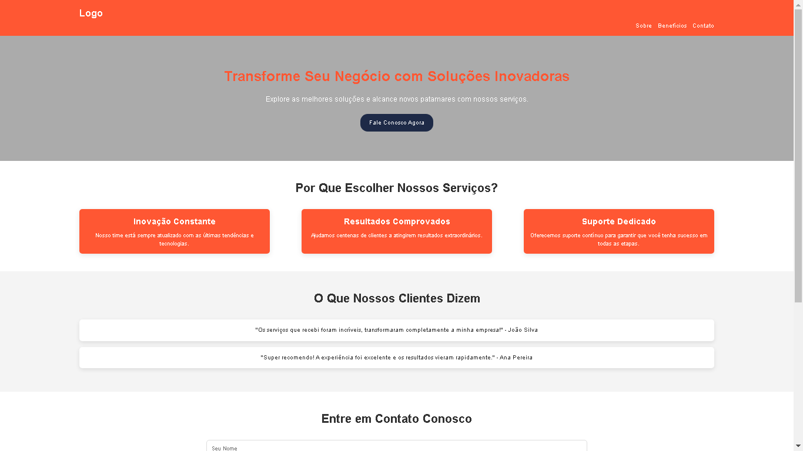

Meus Projetos

Projeto 1: Landing Page Empresarial
Landing page moderna e estrat√©gica, com design responsivo, chamada para a√ß√£o envolvente e se√ß√£o de depoimentos para gerar mais convers√µes. üöÄ

Projeto 2: Página de Contato Empresarial
Página de contato intuitiva e eficiente, desenvolvida com HTML, CSS e JavaScript. Inclui formulário otimizado, design profissional e integra√ß√£o com redes sociais, facilitando a comunica√ß√£o com clientes. üì©.